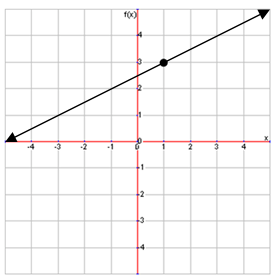
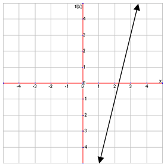

A form of an equation that is similar to slope-intercept form is point-slope form, which looks like this:
$$y-y_1=m(x-x_1)$$
Be careful not to confuse x with x1 or y with y1. x1 and y1 are the coordinates of a point on the line. It can be any point so long as it is on the line. x and y are the variables, just like in slope-intercept form. Also like in slope-intercept form, m is the slope. In addition, you should be careful of your negative signs when using this formula. Remember that subtracting a negative is the same as adding a positive. Point-slope form is sometimes easier to use than slope-intercept form if you are not given a y-intercept in the problem. For example, try finding the equation of the line that passes through the points $(1, 0)$ and $(4, 2)$.
First, we must find the slope of this line, and we can use ${y_1-y_2}/{x_1-x_2}$ to do so:
$${2-0}/{4-1}={2}/{3}$$
Be sure not to mix up the x's and y's from this formula with the ones in the point-slope form formula. Now that we have our slope, we can use either of the two points given to us to write our equation. In this example, we will use the point $(4,2)$. Plugging all of our values into the formula gives us this equation:
$$y-2={2}/{3}(x-4)$$
Point-slope form and slope-intercept form are very similar. In fact, slope-intercept form is just a specific case of point-slope form. Try writing an equation that goes through the point $(0,3)$ and has a slope of 2. Plugging these numbers into our formula, we get this:
$$y-3={2}/{3}(x-0)$$
Simplifying this and isolating the y variable will result in this form:
$$y={2}/{3} (x)+3$$
And this is just slope-intercept form.
Graphing using the point-slope form is very much like graphing using slope-intercept form. Let�s try graphing the line for the following equation:
$$y-3={1}/{2}(x-1)$$
First, just like in slope-intercept form, we need to point to start drawing our line. In this case, will we use the point given in the equation, $(1,3)$. Now all we need to do is use the slope, ${1}/{2}$, to draw our line.

You may also need to write an equation in point-slope form from a graph. Similar to doing this in slope-intercept form, you first need to select a point on the line and find the slope to plug into your formula. Try writing an equation in point-slope form for the line on this graph:

We can pick any point on this line, but it is often easiest to use a point with whole number coordinates, so we are going to pick the point $(2,-1)$. Now we need to find the slope, which we can do using ${\text{rise}}/{\text{run}}$. The slope of this line is 4, so now we just plug all of our numbers into the formula and get this equation:
$$y+1=4(x-2)$$
Carefully note that we have written +1 on the y side of the equation, because our point is -1, and the formula is:
$$y-y_1=m(x-x_1)$$
So, subtracting a negative is the same as adding a positive.